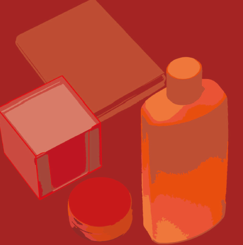
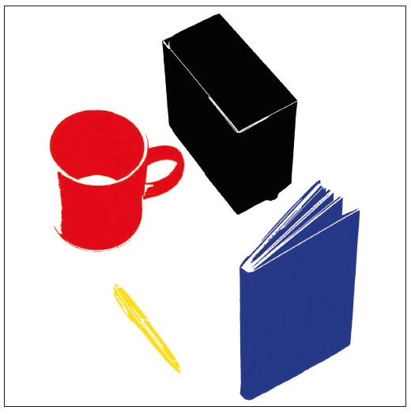
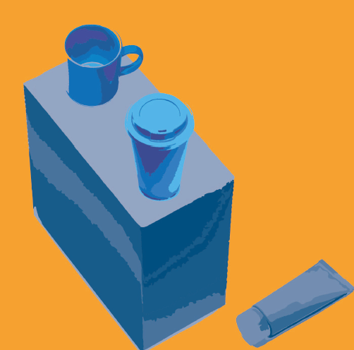
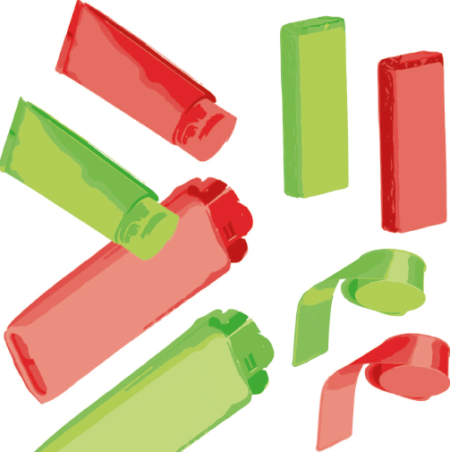
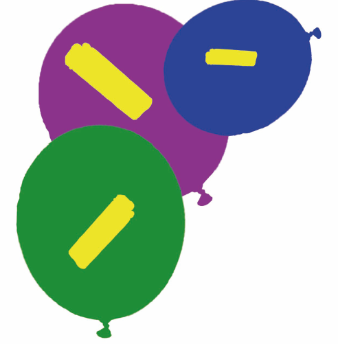
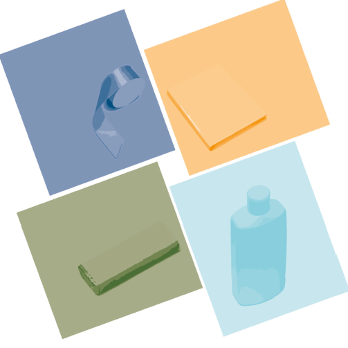

There's a reason we don't see the world in black and white!
Itten's Color Contrasts
Johannes Itten was one of the first people to define and identify strategies for successful color combinations. Through his research he devised seven methodologies for coordinating colors utilizing the hue's contrasting properties. These contrasts add other variations with respect to the intensity of the respective hues; i.e. contrasts may be obtained due to light, moderate, or dark value.
For this assignment I made 7 compositions where I played with the colors to represent these types of contrasts.
The contrast of light and dark
The contrast is formed by the juxtaposition of light and dark values. This could be a monochromatic composition.
Contrast of hue
The contrast is formed by the juxtaposition of different hues. The greater the distance between hues on a color wheel, the greater the contrast.
Contrast of warm and cool
The contrast is formed by the juxtaposition of hues considered ‘warm’ or ‘cool.’
Complementary Conrast
The contrast is formed by the juxtaposition of color wheel or perceptual opposites.
Simultaneous contrast
The contrast is formed when the boundaries between colors perceptually vibrate. Some interesting illusions are accomplished with this contrast.
Contrast of saturation
The contrast is formed by the juxtaposition of light and dark values and their relative saturation.
Contrast of extension

Also known as the contrast of proportion The contrast is formed by assigning proportional field sizes in relation to the visual weight of a color.